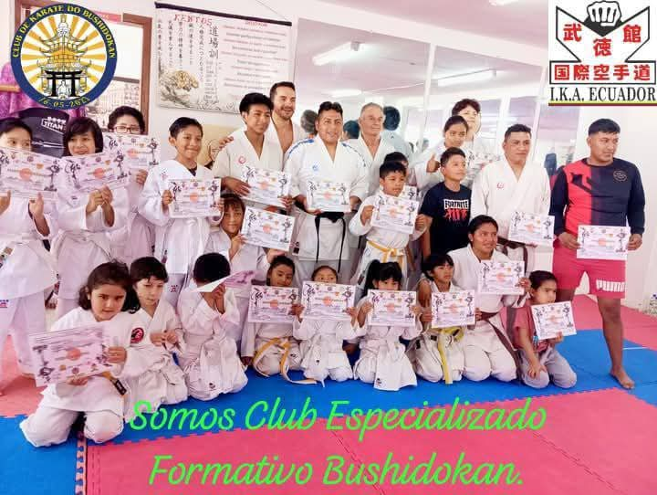

🥋 Acerca del Club Bushidokan
El Club de Karate-Do Especializado Formativo "Bushidokan" es un espacio dedicado a la formación integral a través
del arte marcial japonés Karate-Do, basado en el estilo Shotokan y en la filosofía del Bushido, que representa las
siete virtudes samuráis: integridad, valentía, compasión, respeto, honestidad, lealtad y disciplina.
Nuestro club combina el aprendizaje técnico con el desarrollo mental y espiritual para formar guerreros completos,
comprometidos con su crecimiento personal y la práctica responsable del karate.
📌 ¿Qué ofrecemos?
- 🥋 Clases de Karate para todos los niveles: desde principiantes hasta avanzados, incluyendo katas,
kumite y defensa personal.
- 🧠 Formación en valores del Bushido: disciplina, respeto, autocontrol, perseverancia y más.
- 👨👩👧 Clases adaptadas por edades: niños, adolescentes y adultos en un ambiente seguro y familiar.
- 🏆 Preparación para torneos y exámenes: apoyo en competencias y certificaciones oficiales.
- 📚 Seminarios y talleres: con instructores invitados y temáticas especiales para enriquecer la
formación.
- 🏡 Ambiente familiar y motivacional: que fomenta la integración y el compañerismo entre
estudiantes.

❓ ¿Por qué elegirnos?
En Bushidokan no solo aprenderás Karate-Do, sino que desarrollarás una actitud fuerte, equilibrada y positiva que
te acompañará en todos los ámbitos de tu vida.
Contamos con instructores certificados y una comunidad comprometida que te apoyará en cada paso de tu camino
marcial.
🎉 Ven y vive la experiencia Bushidokan
Te invitamos a una clase de prueba gratuita. ¡Descubre tu potencial y únete a nuestra familia marcial! 💪

📖 Nuestra Historia
El Club de Karate-Do Especializado Formativo "Bushidokan" fue fundado el 16 de mayo de 2023 por el
Sensei Diego Patricio Coro Lima, 2do Dan por la International Karate Association (IKA Ecuador), a quien orgullosamente
representamos.
Desde entonces, nuestro club ha crecido formando una comunidad dedicada de estudiantes e instructores, promoviendo la
práctica tradicional y competitiva del karate-do en Quito y más allá.
Hemos vivido momentos destacados como torneos ganados, graduaciones de cinturones hasta el nivel negro, y numerosos
logros personales de nuestros miembros, consolidando un legado de compromiso y excelencia.
👥 ¿Quiénes Somos?
Somos un equipo apasionado y dedicado de instructores y estudiantes de karate-do que compartimos la filosofía del
Bushido. Nuestro objetivo es brindar entrenamiento de alta calidad, fomentar el crecimiento personal y desarrollar
habilidades físicas y mentales en nuestros guerreros.
- Misión: Enseñar y practicar el karate-do de manera integral, enfatizando la disciplina, el respeto y
la perseverancia.
- Valores: Honestidad, lealtad, autocontrol y respeto.
- Objetivos:
- Desarrollar habilidades físicas y mentales en nuestros miembros.
- Fomentar la disciplina y el respeto.
- Brindar oportunidades para crecer y mejorar.
¿Quieres saber más sobre nuestra visión y objetivos?
🎯 Misión
- Desarrollar personas integrales: A través del karate-do, buscamos potenciar habilidades físicas, mentales y emocionales.
- Fomentar la disciplina y el respeto: Enseñamos los valores y principios del Bushido para promover responsabilidad y autocontrol.
- Brindar un ambiente de aprendizaje: Creamos un entorno seguro y de apoyo para que todos puedan aprender y crecer.
Nuestra misión es guiar a nuestros miembros en su camino hacia la excelencia y el crecimiento personal.
¿Quieres saber más sobre nuestra visión y objetivos?
🌟 Visión
- Ser un referente en la enseñanza del karate-do: Buscamos la excelencia en la formación y práctica.
- Fomentar una comunidad unida: Crear una red de personas apasionadas que compartan valores y principios.
- Desarrollar líderes: Formar líderes que propaguen la filosofía del Bushido en la vida diaria.
Nuestra visión es inspirar y motivar a nuestros miembros para que alcancen su máximo potencial.
¿Quieres saber más sobre nuestros objetivos y cómo puedes unirte a nosotros?
📌 Objetivos
- Desarrollar habilidades físicas y mentales: Mejorar la condición física, coordinación y concentración.
- Fomentar disciplina y respeto: Promover los valores y principios del Bushido.
- Crear un ambiente de aprendizaje: Espacio seguro y de apoyo para el crecimiento personal.
- Promover la competencia sana: Oportunidades en torneos y eventos deportivos.
- Desarrollar líderes: Formar estudiantes capaces de enseñar y guiar a otros.
- Formar deportistas íntegros.
- Fomentar actividades saludables.
- Desarrollar disciplina y respeto.
- Espacios recreativos de crecimiento.
Nuestros objetivos están diseñados para ayudar a nuestros miembros a crecer y desarrollarse como personas.
¿Quieres saber más sobre cómo puedes unirte a nosotros?
⬅️ Volver al inicio